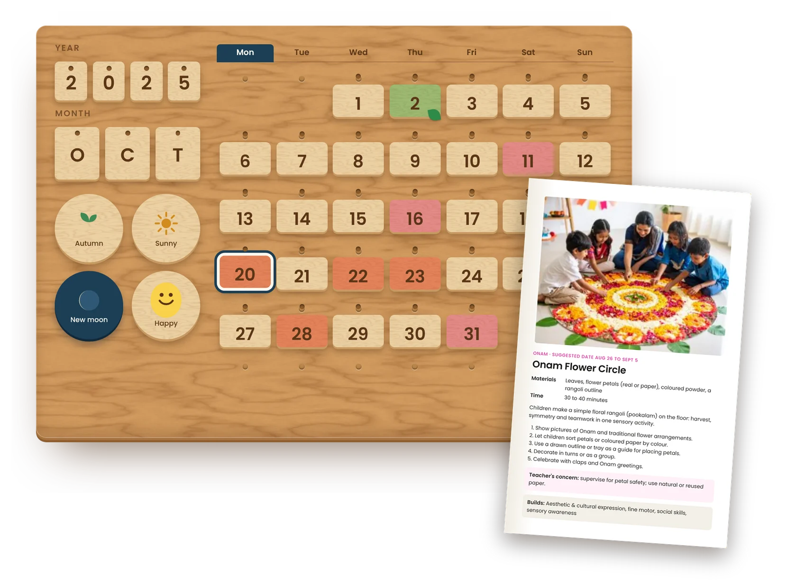
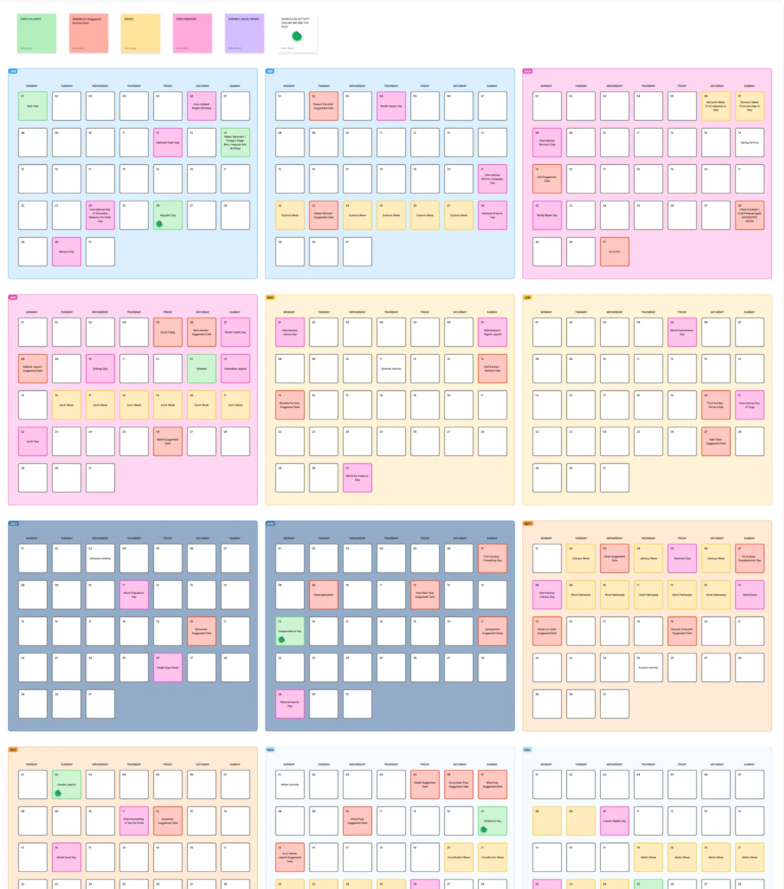
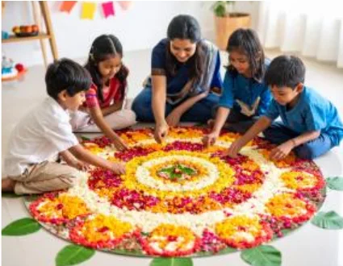
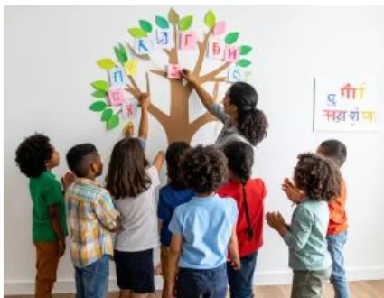

Festivals move
Holi, Eid, Diwali and most Indian festivals follow lunar calendars, so their dates shift every year. Workers have to look each one up again.
IIT Delhi · Early Childhood Care & Education · UX case study
Sadabahar means evergreen. It is a wooden pegboard calendar and an activity booklet for Anganwadi centres that work for at least ten years without a reprint. Teachers re-hang it once a month, children set it every morning, and every festival on it comes with a ready, age-right activity.
Play with the board
Who uses an Anganwadi calendar, what gets in their way, and how young children learn.
The problem
Holi, Eid, Diwali and most Indian festivals follow lunar calendars, so their dates shift every year. Workers have to look each one up again.
Printed calendars are thrown away every December, tear in a busy classroom, and say nothing about what to actually do with the children on the day.
A petal rangoli needs petals. A national holiday closes the centre, so its activity has to happen the day before. A date alone doesn't tell a worker that.
Personas
Proto-personas drawn from our secondary research on Anganwadi centres and ECCE guidelines. They kept two very different needs in the room.
Anganwadi worker, 12 years at a village centre
"Tell me what to do today, and what to get ready for tomorrow."
Children aged 3 to 6 at the centre
"Main lagaunga!" (I'll put it up!)
Secondary research
We started from the National Curriculum Framework for the Foundational Stage and the ECCE principles, then tagged every activity with the domain it builds and the learning theory behind it.
Symbolic play: dress-up and role play of festivals and family traditions. Egocentrism: stories about why people light diyas or thank nature, to see others' feelings. Animism: puppets, animals and nature as characters.
Zone of proximal development: tasks just past what a child can do alone, like decorating a lamp with help. Scaffolding: adult support in storytelling and food prep. Social interaction: group singing and festivals in a circle.
Turning what we learned into one problem, three questions and the rules the design has to follow.
Problem statement
Mapping the year
We listed every holiday, festival, awareness day and theme week in the year, with how its date is decided, its usual range, a theme, a development goal and a linked theory. Then we laid all twelve months out and colour-coded them, so the type of day is readable before any word is.
A sixth thread runs under all of it: Know your body better, one body theme per month (bones in January, senses in February, breathing in June) for the days with no festival.

Design principles
Most of the board's users can't read yet, and many workers read better in their home language than in English. So the board leans on what everyone can read: numbers, colour and pictures.
Three ways to hold a year, weighed against the design goals.
Three directions
A
No weekdays printed, festival days fixed on each sheet. Cheap and familiar, but thrown away every year and wrong as soon as a lunar festival moves.
B
A metal plate with magnets for events and an erasable strip. Flexible, but it hides the structure, and nothing on it is safe or tactile for a three-year-old.
C · Chosen
A 7 by 6 grid of pegs fits every possible month. Month blocks swap, date blocks are re-hung by the teacher, festivals get their own painted blocks. Year round, no paper waste, and children can handle every piece.
The board, the booklet, and the system that keeps both right for ten years.
The board
The board opens on today. Pick any year up to 2035 and any month, and watch the date blocks re-hang under the right weekday while the moving festivals find their new dates. Tap a block to see its activity, and tap the weather and mood discs the way children would each morning.
Built to last
Any month starts on one of seven weekdays and needs at most six rows. The 7 by 6 pegs cover every combination, forever. The teacher only finds which weekday day 1 falls on.
A booklet card belongs to Holi or Onam, not to 14 March. Fixed days, theme weeks and "second Sunday" days never change, so no page goes out of date when a festival moves.
Only moving festivals change, so they live on a single table at the back of the booklet. It runs to 2035; after that, one new printed page renews the whole kit.
What's in the box
The booklet
Two activities a week gives 104 a year. Each one is a single card with the same parts (materials, time, steps, the teacher's concerns, the skills it builds), written for a worker with ten minutes to prepare and a mixed group of three-to-six-year-olds.
September · Chapter 9

Onam · suggested date Aug 26 to Sept 5
Children make a simple floral rangoli (pookalam) on the floor: harvest, symmetry and teamwork in one sensory activity.
Teacher's concern: supervise for petal safety; use natural or reused paper.
Builds: Aesthetic & cultural expression, fine motor, social skills, sensory awareness

Hindi Alphabet TreeHindi Diwas · akshar recognition, pride in mother tongueHow the kit is used day to day, and what a pilot has to prove.
Scenario walkthrough
Test plan
The concept hasn't been tested in a centre yet. This is the pilot we planned: one board and one booklet chapter in a centre for a month, with these tasks and targets.
| Task | Who | Success looks like |
|---|---|---|
| Re-hang the board for a new month using the booklet | Worker | Done in under 5 minutes, with no mistakes, by the second month |
| Find today's activity and its materials | Worker | Under 1 minute, without help |
| Prepare for a holiday from the leaf mark | Worker | No festival in the month missed or prepared late |
| Move the today marker and set the weather and mood discs | Children | Children do it themselves by the third week |
| Name the month, the weekday and the colour of a festival block | Children | Most children can, by the end of the month |